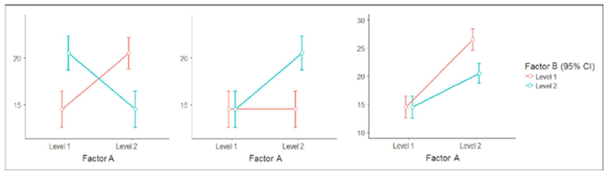
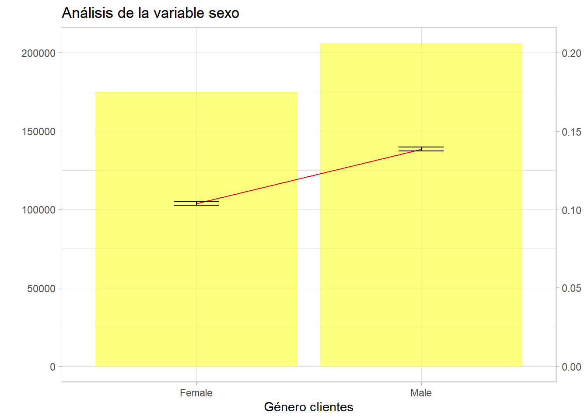
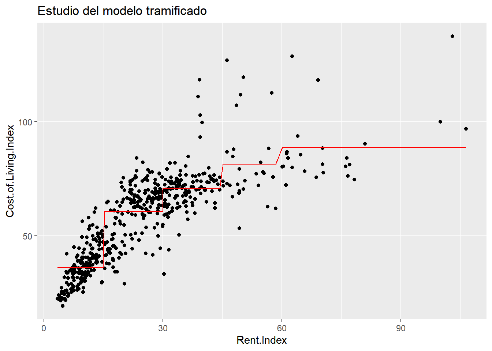
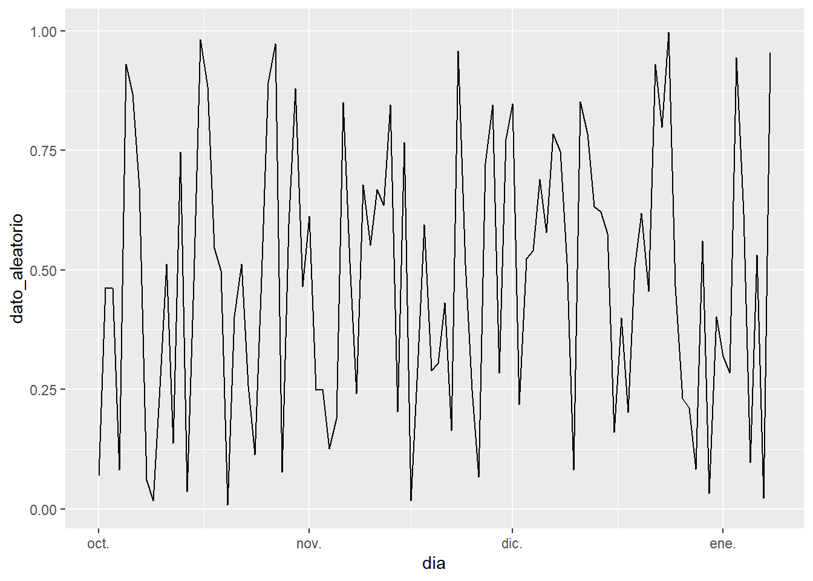

Capítulo 14 Introducción al diseño de experimentos
Otro de los temas dedicados a la Estadística que tiene que conocer el científico de datos es el diseño de experimentos. La motivación del diseño de experimentos está magistralmente ilustrada por Julio Mulero en este hilo de Twitter. Y se considera imprescindible conocer estas técnicas porque aportan una forma de trabajar, de plantear los problemas y un conocimiento de las variables que mejorará el desempeño (y los modelos) del científico de datos.
Los modelos de diseño de experimentos son modelos estadísticos cuyo objetivo es determinar si unos factores influyen en una variable respuesta cuantitativa, y si influyen cuantificar esa influencia.
14.1 Fundamentos del diseño experimental
Es necesario plantear conceptos básicos (algunos ya conocidos) a tener en cuenta a la hora de realizar diseño de experimentos.
Observación experimental: es cada medición de la variable respuesta.
Unidad experimental: son los objetos o los individuos sobre los que se realiza la observación experimental.
Tamaño del Experimento: es el número total de unidades experimentales recogidas en el diseño.
Variable de interés o respuesta: es la variable cuantitativa que se desea estudiar y controlar su variabilidad, la variable dependiente.
Factor: son las variables cualitativas independientes que pueden influir en la variabilidad de la variable de interés. Pueden ser:
- Factor tratamiento: es un factor del que interesa conocer su influencia en la respuesta.
- Factor bloque: es un factor que aporta variación pero no es de interés en el experimento. Sin embargo, se quiere controlar para disminuir la variabilidad residual.
Según sean elegidos por el experimentador o elegidos al azar de una amplia población se denominan factores de efectos fijos o factores de efectos aleatorios.
Niveles: cada uno de los resultados de un factor.
Tratamiento: es una combinación específica de los niveles de los factores en estudio. Son, por tanto, las condiciones experimentales que se desean comparar en el experimento. En un diseño con un único factor son los distintos niveles del factor y en un diseño con varios factores son las posibles combinaciones de niveles de los factores.
Interacción de factores: existe interacción entre dos factores \(F_i\) y \(F_j\) si el efecto de algún nivel de \(F_i\) cambia al cambiar de nivel en \(F_j\). Esta definición puede hacerse de forma simétrica y se puede generalizar a interacciones de orden tres o superior. El análisis de interacciones permitirá al científico de datos mejorar variables presentes en sus modelos y tiene un apartado específico más adelante.
Ortogonalidad de factores: dos factores \(F_i\) y \(F_j\) con i y j niveles, respectivamente, son ortogonales si en cada nivel i de \(F_i\) el número de observaciones de los j niveles de \(F_j\) están en las mismas proporciones. Esta propiedad permite separar los efectos simples de los factores en estudio.
Diseño equilibrado o balanceado: es el diseño en el que todos los tratamientos son asignados a un número igual de unidades experimentales.
14.2 Fuentes de variabilidad
Este tipo de análisis se basan en la experimentación y en el análisis de resultados, se estudia si empleando un tratamiento, como una vacuna, un nuevo diseño de la web, unos nuevos precios o modificando una publicación en RRSS se producen mejoras en unas unidades experimentales que serán los elementos que participan en el test, individuos, clics, likes… Fuera de un laboratorio es complicado controlar los efectos de una vacuna o una modificación de una web. Existen fuentes variación distintas a los factores que se pretenden estudiar y estos factores exógenos al problema pueden plantear cambios significativos en la variable respuesta. Por este motivo es importante diseñar correctamente el experimento y determinar los tipos de variabilidad se pueden encontrar a la hora de realizar el experimento:
Variabilidad sistemática y planificada. La establece los tratamientos y es la que se desea estudiar, tiene o no vacuna, grupo de control frente a grupo de tratamiento o la edad del individuo, aunque no interese medirla puede interesar el efecto. En una publicación en RRSS la vertiente política puede ser de interés pero aparece la hora de la publicación como fuente de variación, se tiene que tener claro que se desea medir para evitar introducir variabilidad no deseada.
Variabilidad por la naturaleza. Es un componente que a priori es aleatorio en el caso de la aplicación de la vacuna puede ser la raza o el lugar de residencia. En una publicación en RRSS pueden influir otras noticias de actualidad que inicialmente se desconocían y que han surgido en el momento de la publicación.
Variabilidad sistemática y no planificada. Hay causas desconocidas que afectan a los resultados y es fundamental encontrar estas fuentes de variación de la variable respuesta. En la prueba de la vacuna pueden existir patologías previas que estén influyendo negativamente y en el caso de las RRSS variaciones en la priorización llevadas a cabo por la propia red social o publicaciones de la competencia deberían detectarse para aislar su comportamiento.
14.3 Planificación
Este es uno de los elementos más importantes del diseño de experimentos y lo que puede ayudar al científico de datos a mejorar en sus análisis porque en esta fase han de quedar claros todos los elementos participantes en el proceso de modelización. Paso a paso los elementos son:
Definir el objetivo del experimento. Es necesario tener claro cuales son las unidades experimentales y cual es la variable respuesta. Además, es importante saber como se estructuran estos elementos en los datos, en capítulos anteriores ya se hizo mención a la relevancia de la estructura.
Identificar las fuentes de variación. Los principales, los factores de tratamiento y la definición de los niveles. Pero está el ruido, esos factores bloque que están aportando variabilidad y que no son relevantes en el análisis, es necesario identificarlos para eliminar variación residual.
Definir el diseño. En este caso los diseños son muchos y variados, y es la parte más compleja del diseño de experimentos. En este ensayo no se entrarán en diseños de alta complejidad pero en función de las fuentes de variación, si hay uno o más factores de tratamiento, bloques, factores anidados,… se disponen de distintos tipos de diseño, en este capítulo se verán lo más importantes.
Modelo matemático. Una vez se tienen claros todos los elementos anteriores es necesario definir el modelo matemático porque será éste el que nos marque la tabla ANOVA a emplear para contrastar las hipótesis del estudio. Esta tabla contendrá todas las fuentes de variación, las sumas de cuadrados correspondientes a esas variaciones y los contrastes de igualdad de medias.
14.4 Bloquear y aleatorizar factores
En diseños complejos es necesario determinar que se hacen con aquellos factores presentes en el estudio que pueden aportar variabilidad pero que no se desea estudiar; para ello es necesario determinar una estrategia. ¿Qué se hace con estas fuentes de variación irrelevantes? Se pueden bloquear o bien aleatorizar.
Bloquear es asumir que existe una fuente de variación, que no interesa en el experimento, pero que aparece y es necesario medir. Ese elemento ha de estar presente en el modelo matemático que será de esta forma \(respuesta = constante + tratamiento + bloque + error\) una forma ya conocida donde además de la constante se añaden dos parámetros correspondientes a lo que interesa estudiar (tratamiento) y a un efecto que aparece pero que no interesa (bloque).
Aleatorizar consiste en transformar una posible fuente de variación sin interés en error, es decir, pasar de un modelo del tipo \(respuesta = constante + tratamiento + bloque + error\) como el anterior a un modelo \(respuesta = constante + tratamiento + error\) Como se comentó en el capítulo anterior siempre es positivo simplificar modelos, desaparece un elemento, pero ese “problema” no desaparece, se introduce en \(error\), reduce el sesgo incrementando el error (dilema sesgo-varianza), esta estrategia ha de tenerla clara el científico de datos cuando desee realizar un estudio.
El paradigma de esta situación se da cuando se quieren analizar procesos industriales en los que hay intervención humana, las personas que realizan ese proceso son bloques o bien se diseña la recogida de datos de forma que la intervención humana sea completamente aleatoria. El analista tiene que tener claro que hacer. Por ejemplo, una campaña en medios digitales y se desean medir el número de clics a un banner. ¿El medio en el que aparece se puede bloquear (agrupar para transformar en un factor bloque)? ¿La posición del banner será relevante? ¿El tipo de noticia? ¿Fechas en las que aparece? Puede complicarse mucho el correcto planteamiento cuando lo que está interesando es estudiar el tipo de comunicación o el propio diseño del banner. En ese caso se puede optar por aleatorizar y asumir que es posible que se incremente el error.
14.5 Diseños factoriales
Los diseños factoriales son los más sencillos y van a introducir las cuestiones que se plantean resolver mediante diseño de experimentos. ¿Las medias de una variable \(Y\) son las mismas para todos los niveles de una variable \(X\)? ¿Las medias de una variable Y son las mismas para todos los niveles de unas variables \(X_i\) y \(X_j\)?
14.5.1 Modelo unifactorial. A/B testing
Al igual que pasaba con la regresión lineal simple el modelo con un sólo factor es el principio de todo. Como ya se ha anticipado con anterioridad el modelo matemático es del tipo \(respuesta = constante + tratamiento_i + error\) y la cuestión que se plantea con él es. ¿Para todo i de \(tratamiento_i\) son iguales las medias de \(respuesta\)?
Un ejemplo claro de modelo unifactorial es el A/B testing, con dialéctica se puede vestir como un análisis avanzado pero es el diseño experimental más sencillo. La tasa de conversión o el número de clics en una noticia son medidas cuantitativas fundamentales tanto en el comercio electrónico como en webs de contenidos. En esa medición que suele ser % de éxito (media de una proporción) pueden influir muchos factores como son la UX, el tráfico generado, la competencia, reputación,… El objetivo es aislar esos factores y realizar una medición que nos permita decantarnos por un diseño u otro o por un contenido u otro. A este diseño experimental se le conoce como A/B testing.
En el comercio electrónico el A/B testing puede consistir en la comparación de dos versiones de una web que comparten URL y se han de mostrar aleatoriamente a los usuarios de la página una u otra versión. Se podrá comparar una medida de conversión para cada situación propuesta mediante un diseño experimental pero es fundamental aleatorizar completamente el experimento para que la variable a medir solamente se vea influenciada por el diseño. En el caso de la selección de contenidos hay ejemplos como el de Facebook que ha analizado emociones mediante esta técnica, ofreciendo a una selección de usuarios mensajes positivos y a otra selección mensajes negativos o mensajes con una ideología u otra para poder determinar las ideas políticas de los usuarios.
La filosofía del ciclo de procesos de A/B testing es:
Experimentar >> Analizar estadísticamente los resultados >> Seleccionar el elemento ganador >> Proponer nuevas Ideas >> Experimentar
En función del modo en que interactuan las poblaciones en análisis se tienen distintos tipos de test:
Test A/A. El mismo experimento se aplica en poblaciones distintas. Esta labor la realizará el científico de datos en múltiples ocasiones si trabaja en el ámbito del marketing, para medir una campaña comercial seleccionará un grupo de tratamiento y un grupo de control. Una campaña comercial es un experimento y ha de medirse el éxito.
Test A/B. Distinto experimento, distintas poblaciones pero situación homogénea. Se prueba un tipo de publicación en RRSS analizando el número de likes para cada tipo de publicación. Un diseño de una web, se prueba otro diseño y se analiza el tiempo de permanencia en ella. En estos casos se contrastan diseños y es necesario velar porque los usuarios de las web y los tiempos de exposición sean similares, que exista esa igualdad de condiciones que garantice la aleatoriedad de las mediciones.
Test A/B/N. Similar al test A/B pero introduciendo nuevos factores, en este caso es un diseño factorial con más de un factor en análisis con las complicaciones que ello tiene como se verá posteriormente.
Ejemplo con R
Para ilustrar como se realiza un modelo unifactorial A/B testing se plantea testear si el diseño de una página provoca más o menos conversión de objetivos. Al científico de datos le han suministrado un conjunto de datos ab_data.txt y se le plantean las siguientes cuestiones:
- Pregunta: ¿El diseño de la web afecta en la consecución de objetivos?
- Hipótesis: El nuevo diseño aumenta la conversión
- Variable dependiente: la conversión
- Variable independiente: el diseño de la web
Comienza el trabajo con R:
library(tidyverse)
ab_data <- read_csv("./data/ab_data.txt") %>%
as_data_frame()
head(ab_data)## # A tibble: 6 x 5
## user_id timestamp group landing_page converted
## <dbl> <dttm> <chr> <chr> <dbl>
## 1 851104 2017-01-21 22:11:48 control old_page 0
## 2 804228 2017-01-12 08:01:45 control old_page 0
## 3 661590 2017-01-11 16:55:06 treatment new_page 0
## 4 853541 2017-01-08 18:28:03 treatment new_page 0
## 5 864975 2017-01-21 01:52:26 control old_page 1
## 6 936923 2017-01-10 15:20:49 control old_page 0Se dispone de 5 variables.
user_ididentificador de usuario. Juega el rol de IDtimestampfecha y hora de la visita, si se ha realizado bien el experimento ha de ser intrascendente.groupdefine el grupo de control y el grupo de tratamientolanding_pagedefine el diseño de la página web, antiguo o nuevoconvertedes la variable conversión, la que interesa medir
Para la correcta realización de un A/B testing es necesario determinar el mínimo número de observaciones necesarias para que los resultados tengan validez estadística. ¿Son suficientes los registros que se disponen? Se recuerda que el científico de datos ha de tener nociones de muestreo, pueden aparecer estas situaciones. Se va a emplear la librería de R powerMediation para entender los elementos necesarios en la determinación del tamaño de la muestra.
require(powerMediation)La función SSizeLogicBin permite calcular el tamaño necesario de la muestra en base a elementos tratados en el capítulo 12 dedicado al muestreo y la inferencia, a priori el científico de datos ha de fijar un p-valor y una potencia de test para una clasificación binaria (convierte o no convierte), la función requiere los siguientes parámetros:
SSizeLogisticBin(p1,
p2,
B,
alpha = 0.05,
power = 0.8)Donde p1 es la probabilidad el evento cuando X = 0, cuando se está en el grupo de control, en la fórmula de la logística \(logit(p) = a + b X\); en el ejemplo de trabajo puede ser la proporción de éxito “habitual”, las conversiones lógicas con el actual diseño. Si no existe experiencia previa el científico de datos tendrá que establecer esta proporción del algún modo. En este caso se va a tomar directamente un 0.1
El caso de p2 es la probabilidad del evento cuando x = 1, cuando es el grupo de tratamiento en la fórmula de la logística \(logit(p) = a + b X\), también es desconocida pero se asume superior a p1 porque no tendría sentido el experimento. Se toma el valor 0.12 porque conviene establecer proporciones realistas y no asumir que un experimento dará unos resultados excepcionales.
El valor B es la proporción entre tratamiento y control. Se puede comprobar ese dato.
ab_data %>% group_by(group) %>% summarise(proporcion=n()/nrow(ab_data))## # A tibble: 2 x 2
## group proporcion
## <chr> <dbl>
## 1 control 0.500
## 2 treatment 0.500La proporción es de un 50% por lo que se toma un valor de 0.5, este tipo de resultados son garantía de la correcta aleatorización que se comprobará en un paso poseterior.
Como p-valor y potencia se toman los valores habituales de 0.05 y 0.8 respectivamente. Ya se disponen de todos los datos necesarios y se ejecuta la función.
tamaño = SSizeLogisticBin(p1 = 0.10,
p2 = 0.12,
B =0.5,
alpha = 0.05,
power = 0.8)
tamaño ## [1] 7682En este caso el experimento requieren 7682 observaciones. El conjunto de datos de trabajo tiene 294478, a priori el científico de datos ya sabía que tenía observaciones suficientes, pero este proceso recalca la posibilidad de reducir el número de observaciones y facilitar experimentos, reducir los tiempos de planteamiento del test y reducción de costes para obtener resultados con validez estadística.
Como se ha indicado es necesario medir o analizar la aleatoriedad de los datos disponibles. Se ha de contrastar si el equipo que ha recopilado los datos lo ha hecho en igualdad de condiciones. El primer paso será identificar duplicidades en el user_id.
duplicados <- ab_data %>% group_by(user_id) %>% summarise(conteo=n()) %>%
filter(conteo > 1)
nrow(duplicados) ## [1] 3894Hay registros duplicados por usuario, directamente se opta por eliminar esos registros ya que se disponen de observaciones suficientes. El ejemplo ilustra como eliminar elementos de una lista con dplyr
ab_data2 <- ab_data %>% filter(!(user_id %in% duplicados$user_id))Hay una fecha de obtención del dato, el graficado de la serie temporal puede ayudar a determinar la aleatoriedad de los registros.
library(lubridate)
ab_data2 <- ab_data2 %>% mutate(fecha=as_date(timestamp))
ab_data2 %>% group_by(fecha) %>% summarise(visitas = n()) %>%
ggplot(aes(x=fecha, y=visitas)) + geom_bar(stat='identity') +
scale_x_date(date_labels = "%d/%m/%Y") 
Hay homogeneidad en las fechas excepto en 2, el inicio y el fin del experimento. De nuevo se utiliza la estrategia del exceso de observaciones por lo que esas fechas van a ser eliminadas.
ab_data2 <- ab_data2 %>% filter(fecha > min(ab_data2$fecha) & fecha < max(ab_data2$fecha) )Las visitas son las unidades experimentales pero lo que interesa estudiar en el experimento es el diseño de la web y para ello se elaboró un grupo de tratamiento con el nuevo diseño de la web y un grupo de control con el antiguo diseño.
ab_data2 %>% group_by(group,landing_page) %>% summarise(visitas=n())## # A tibble: 2 x 3
## # Groups: group [2]
## group landing_page visitas
## <chr> <chr> <int>
## 1 control old_page 136765
## 2 treatment new_page 136949Ya se sabía que las proporciones estaban equilibradas y eliminando observaciones siguen siendo muy parecidas. El número de visitas recogidas para cada nivel del factor en análisis es similar, no es imprescindible pero también refleja aleatoriedad. Además, se ha de corroborar que en las fechas no existe ningún comportamiento aleatorio.
ab_data2 %>% group_by(grupo=paste0(landing_page,"-",group), fecha) %>% summarise(visitas = n()) %>%
ggplot(aes(x=fecha, y=visitas, group=grupo, color=grupo)) + geom_line() + geom_point() +
scale_x_date(date_labels = "%d/%m/%Y") 
Hay algún comportamiento distinto en torno al día 12/01 pero no se considera suficiente para rechazar la aleatoriedad de los datos, existen test de aleatoriedad como el test de rachas pero en este caso puede servir la opinión argumentada del analista o la dificultad de volver a repetir el experimento.
Analizada la suficiencia y la aleatoriedad de los datos disponibles es necesario determinar si existen diferencias significativas en la conversión de objetivos que es la variable de interés. Se plantea la siguiente cuestión ¿es la conversión distinta para los grupos de tratamiento? Se resuelve con el análisis de la varianza.
modelo <- aov(converted ~ group, data= ab_data2)
summary(modelo)## Df Sum Sq Mean Sq F value Pr(>F)
## group 1 0 0.1403 1.334 0.248
## Residuals 273712 28780 0.1051Con la función aov se obtiene la tabla ANOVA, la hipótesis de partida es “son iguales los grupos” se realiza el test y el p-valor arrojado es superior a un umbral conservador de 0.1 por lo que los datos no evidencian diferencias en la conversión de la web en función del diseño de la misma, ese diseño podría ser descartado. Del mismo modo que se realiza el análisis de la varianza se puede plantear un modelo lineal generalizado (GLM con sus siglas en inglés).
modelo.2 <- glm(converted ~ group, data= ab_data2)
summary(modelo.2)##
## Call:
## glm(formula = converted ~ group, data = ab_data2)
##
## Deviance Residuals:
## Min 1Q Median 3Q Max
## -0.1201 -0.1201 -0.1187 -0.1187 0.8813
##
## Coefficients:
## Estimate Std. Error t value Pr(>|t|)
## (Intercept) 0.1201185 0.0008768 136.994 <2e-16 ***
## grouptreatment -0.0014319 0.0012396 -1.155 0.248
## ---
## Signif. codes: 0 '***' 0.001 '**' 0.01 '*' 0.05 '.' 0.1 ' ' 1
##
## (Dispersion parameter for gaussian family taken to be 0.1051454)
##
## Null deviance: 28780 on 273713 degrees of freedom
## Residual deviance: 28780 on 273712 degrees of freedom
## AIC: 160254
##
## Number of Fisher Scoring iterations: 2En este caso la salida es un modelo con sus parámetros y el parámetro asociado al tipo de tratamiento tiene un p-valor análogo al obtenido con el análisis de la varianza, se puede observar que el parámetro asociado el prácticamente 0, en un modelo aditivo como el que se plantea no suma nada al cambio de la media de la conversión. Este tipo de modelos lineales se verán con posterioridad y sirven para resolver estas cuestiones.
14.6 Modelos bifactoriales. Interacciones entre variables
Cuando existen dos factores que pueden presentar una fuente de variación se tienen modelos bifactoriales. Conviene no tener muchos factores en análisis cuando se realiza un diseño de experimentos porque se complica la posibilidad de estudiar como esos factores afectan a la variable de interés. Para entender como se complica basta con ver la formulación del modelo matemático del diseño bifactorial.
\[Y = \nu + \alpha_i + \beta_j + \alpha\beta_{ij} + \epsilon\] En la línea del modelo unifactorial, \(\nu\) es la media global, \(\alpha\) es la media debida al primer factor de interés, \(\beta\) la media debida al segundo factor, ¿qué es \(\alpha\beta\)? Es la interacción entre ambos factores. Cuantos más parámetros más contrastes, más complejidad.
Existe interacción cuando la asociación entre dos variables varía según los diferentes niveles de otra u otras variables. Con el ANOVA bifactorial es posible analizar la existencia de interacción, pero el conocimiento previo y el análisis de esta situación pueden permitir al científico de datos crear nuevas variables para sus modelos que mejoren sustancialmente los resultados.
El paradigma de la interacción entre variables es la paradoja de Simpson que se puede ilustrar con uno de los conjuntos de datos más conocidos que hay en R, penguins
require(palmerpenguins)
pinguinos<- palmerpenguins::penguins %>%
na.omit()
pinguinos %>%
ggplot(aes(x=bill_length_mm, y=bill_depth_mm)) +
geom_point() +
labs(x="Longitud", y="Profundidad") + geom_smooth(method = 'lm')
Con geom_smooth se añade una función lineal que recoja la nube de puntos, el modelo de regresión lineal ya que el método es lm. Sin embargo, si se realiza un modelo lineal por especie.
pinguinos %>%
ggplot(aes(x=bill_length_mm, y=bill_depth_mm, group=species, color=species)) +
geom_point() +
labs(x="Longitud", y="Profundidad") + geom_smooth(method = 'lm')
El comportamiento lineal es completamente distinto por especie, hay una interacción clave por especie si se desea modelar la longitud por la profundidad porque puede llevar a conclusiones incorrectas. Más allá del ejemplo forzado es evidente que hay factores que pueden variar sustancialmente el comportamiento de otros y no es una situación fácil de identificar, como en situaciones anteriores, se recomienda que el científico de datos cree sus herramientas para estudiar las posibles interacciones.
Las interacciones pueden ser de tres tipos.

El primer tipo es el que se ilustraba con la paradoja de Simpson, algún nivel de los factores presentes en el análisis cruza con algún nivel de otro factor en análisis. En el segundo caso uno de los niveles de un factor incrementa la variable respuesta mientras que el otro factor no varía y por último, ambos factores se modifican de forma similar pero uno de los niveles de un factor la variación es mayor.
Para entender los diseños bifactoriales con R se emplea un conjunto de datos con los resultados de un experimento destinado a evaluar los efectos de una dieta.
dieta <- read_csv("./data/diet.csv") %>%
as_data_frame()## Rows: 76 Columns: 7
## -- Column specification --------------------------------------------------------
## Delimiter: ","
## chr (2): gender, diet.type
## dbl (5): id, age, height, initial.weight, final.weight
##
## i Use `spec()` to retrieve the full column specification for this data.
## i Specify the column types or set `show_col_types = FALSE` to quiet this message.Se tiene un experimento con 76 individuos que han sido sometidos a tres tipos de dieta distintos (A, B y C) para cada uno de ellos se tiene un código identificativo, el sexo del individuo, la edad, la altura, el tipo de dieta, peso inicial y peso final. Lo primero es definir la variable respuesta, será la variación de peso en función de su altura.
dieta <- dieta %>% mutate(variacion = (initial.weight - final.weight)/height)
dieta %>% ggplot(aes(x=variacion)) + geom_density()
Los factores presentes en el estudio son:
La edad. No se considera una variable relevante pero puede presentar variación, se considera un factor aleatorizado por lo que no se analizará en el modelo.
El sexo. Se considera factor de tratamiento con 2 niveles.
El tipo de dieta. Evidentemente será un factor de tratamiento con 3 niveles.
Como se tiene un modelo bifactorial es necesario estudiar previamente si existe interacción entre los factores presentes en el estudio.
dieta %>% ggplot(aes(x=diet.type,y=variacion)) +geom_boxplot() + facet_wrap(~gender)
Parece evidente que hay un tipo de dieta que está funcionando mejor para el sexo femenino. Otro análisis visual para identificar interacciones es el gráfico de líneas con las medias de los efectos.
dieta %>%
ggplot(aes(x = diet.type, color = gender, group = gender, y = variacion)) +
stat_summary(fun.y = mean, geom = "point") +
stat_summary(fun.y = mean, geom = "line")
Se aprecia que los hombres han tenido una variación similar pero las mujeres tienen una alta variación para el diet.type C. Con estas consideraciones sobre la interacción entre los factores en estudio se plantea la tabla ANOVA.
modelo.bifactorial <- aov(variacion ~ gender + diet.type + gender*diet.type, data= dieta)
summary(modelo.bifactorial)## Df Sum Sq Mean Sq F value Pr(>F)
## gender 1 0.000004 0.0000044 0.024 0.87807
## diet.type 2 0.002552 0.0012760 6.833 0.00195 **
## gender:diet.type 2 0.001311 0.0006556 3.511 0.03522 *
## Residuals 70 0.013071 0.0001867
## ---
## Signif. codes: 0 '***' 0.001 '**' 0.01 '*' 0.05 '.' 0.1 ' ' 1En la formulación del modelo aparece la interacción como gender*diet.type, por defecto no se incluyen interacciones a la hora de modelar y por ello es relevante el análisis antes planteado ya que se pueden perder variables buenas para la realización de un modelo. La tabla ANOVA presenta tres fuentes de variación, la debida al sexo, la debida al tipo de dieta y la debida a la interacción entre ambas. La dieta, fijado un umbral superior a 0.001 aparece como una variable significativa, produce variación en el peso. Sin embargo, la interacción entre ambas variables con umbrales por debajo del habitual 0.05 podría ser despreciada, este hecho incide de nuevo en la importancia de los análisis previos de las interacciones.
El científico de datos no se va a enfrentar a diseños complejos, pero si ha de contrastar como están funcionando sus modelos mediante pruebas piloto o experimentos. Por ello, se considera importante que maneje los conceptos básicos que se tratan en este capítulo del ensayo. Existen diseños más complejos como los anidados, cuadrados latinos, diseños por bloques, \(2^k\),… Si se desea material de fácil comprensión y que mejora la anterior exposición se recomienda estudiar los siguientes enlaces: